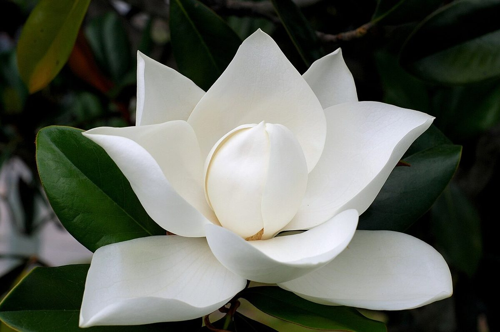
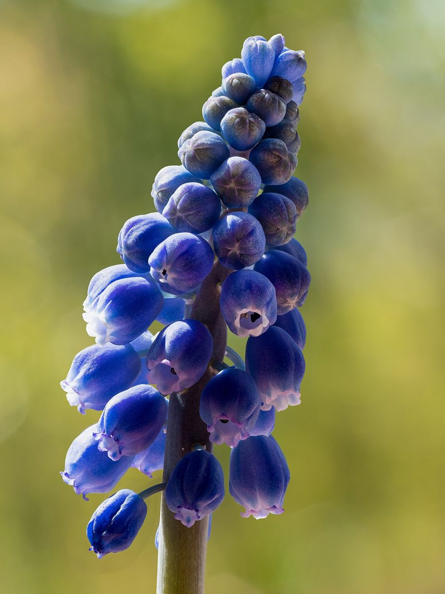
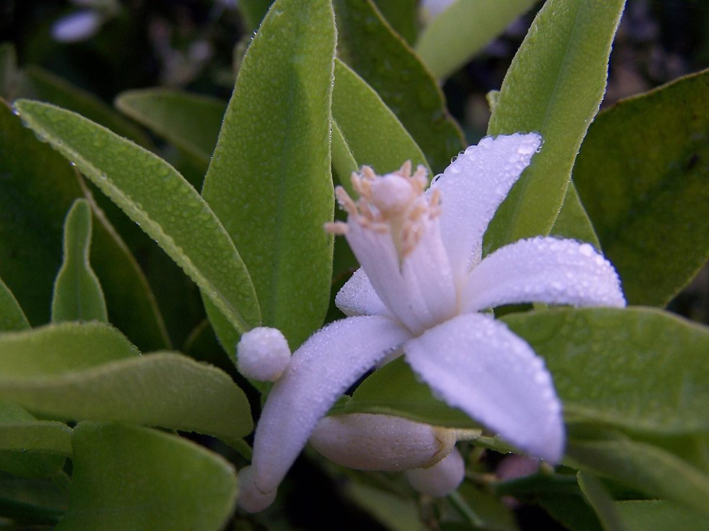

店のこと
店のこと
お店について確認できているのは、所在地とInstagramのアカウントだけです。
このページの「想像してみる」部分は、制作側が想像して書いたものです。お店の実際の様子・考え・メニューとは関係がありません。
確認できていること
- 店名は「Haru Haru cafe」、業種はカフェ
- 所在地は岡山県津山市河辺708
- 電話番号はなし。連絡はInstagramから
- 営業時間・定休日・メニュー・価格・ご予約・駐車場は準備中

想像してみる
「Haru」が二度続く名前から
由来は分かりません。制作側は、同じ音がくり返される名前から、季節がめぐるたびに戻ってきたくなる場所かもしれない、と想像しました。春に限らず、その日の天気や空気に合わせてひと息つく。そんな時間を思い浮かべています(実際のお店の姿ではありません)。



町のこと
津山市について
津山市は岡山県の北部にある市です。このページでは、お店の所在地として確認できている「津山市河辺」以外の土地柄やお店との関係には触れていません。